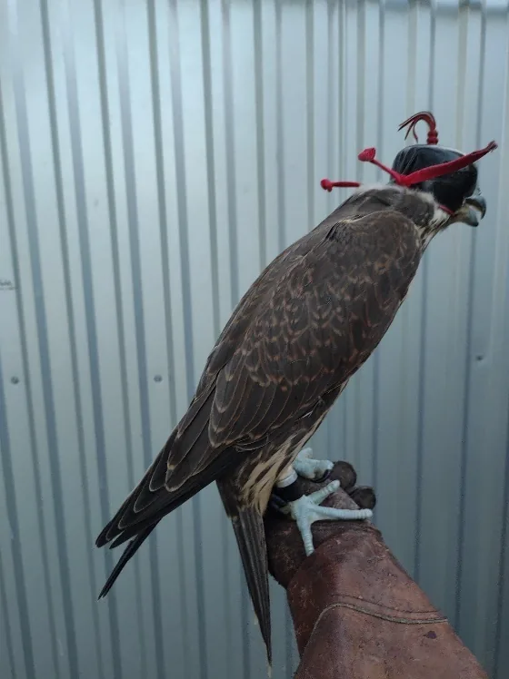
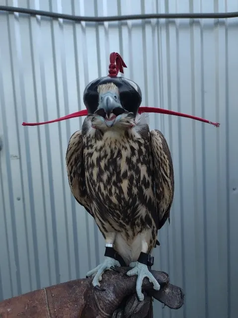
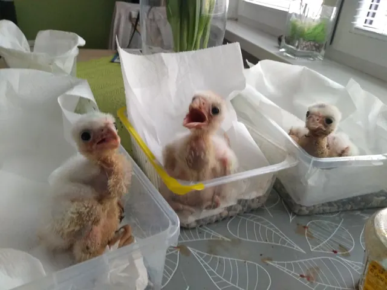
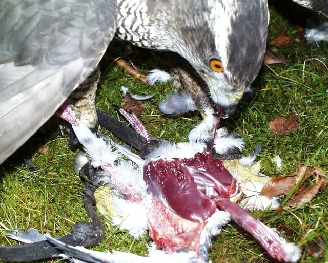
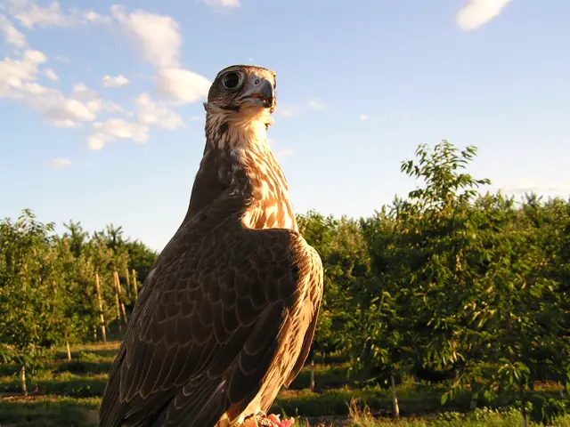
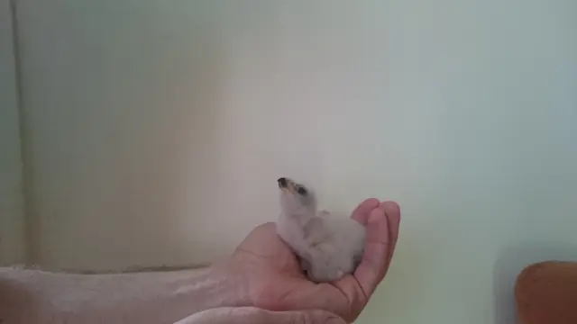

Anatómia a správanie
Ako je dravec stavaný a ako vníma svet
Telo dravca je prispôsobené rýchlemu letu, presnému zraku a lovu. Kto pozná jeho stavbu, ľahšie rozpozná, že s vtákom niečo nie je v poriadku, a lepšie sa o neho postará.

01
Koža a perie
Koža tvorí bariéru medzi vonkajším a vnútorným prostredím, tepelne izoluje a pomáha regulovať telesnú teplotu. Sú v nej nervové receptory, ktoré dravcovi sprostredkúvajú tlak, smer a silu prúdenia vetra, teplotu aj bolesť pri poranení. Obsahuje tiež látky, ktoré sa účinkom slnečného žiarenia menia na vitamín D. Z kože vyrastajú perie, pazúry a zobák.
Pokožka je v porovnaní s inými stavovcami tenká. Pod ňou je zamša so žľazami, cievami, receptormi a svalmi, ktoré pohybujú perím, a podkožné väzivo, v ktorom sa ukladá tuk.
Perie chráni povrch tela a udržiava teplo. Jeho tvar a kvalita priamo ovplyvňujú, ako dobre dravec lieta. Nepokrýva celé telo – rastie v takzvaných perniciach, medzi ktorými sú holiny bez peria.
Druhy peria
- Kontúrové perá – krovky, ktoré pokrývajú telo, letky na krídlach a kormidlové (chvostové) perá. Háčiky perútok do seba zapadajú a vytvárajú pevnú zástavicu.
- Letky – ručné (primárne) a lakťové (sekundárne a terciárne). Vonkajšiu zástavicu majú užšiu, vnútornú širšiu.
- Krídelko (alula) – kratšie perá pri ohybe krídla, ktoré pomáhajú prekonávať turbulencie.
- Páperie pod krycím perím slúži na udržanie tepla; páperček je prvé perie mláďat.
- Hmatové (štetinovité) perá rastú okolo zobáka.
- Prachové (púdrové) perá sa rozpadajú na jemný prach, ktorým si dravce bez mazovej žľazy ošetrujú a impregnujú perie.


Preperovanie
Väčšina dravcov preperuje raz za rok, prevažne v období hniezdenia. Pri veľkých druhoch, napríklad orloch, trvá úplná výmena operenia 2 až 3 roky.
Rastúce pero je prekrvené a má nervové zakončenia – ak sa poškodí, môže silno krvácať. Po dorastení cievy aj nervy odumrú, preto pero, ktoré prirodzene vypadne, nekrváca ani nebolí. Poškodená papila, z ktorej pero rastie, môže spôsobiť, že nové pero bude deformované.
Počas preperovania sokoliar s dravcom podľa možností nelieta a drží ho v pokojnom prostredí a dobrej kondícii. Pri strese a nedostatočnej výžive vznikajú na perách hladové pásy – oslabené miesta, v ktorých sa pero ľahko zlomí. Zlomené perá sa dajú nadstaviť.
02
Dýchanie, krvný obeh a hlas
Dýchaciu sústavu tvorí nosohltan, hrtan, priedušnica, hlasový orgán (syrinx), priedušky, pľúca a pľúcne (vzdušné) vaky. Väčšina vtákov má 9 vzdušných vakov, najviac ich môže byť 12. Siahajú medzi vnútorné orgány aj do dutých kostí.
Vo vzdušných vakoch sa plyny nevymieňajú – zvyšujú však kapacitu pľúc, zefektívňujú dýchanie, znižujú hmotnosť tela, menia jeho ťažisko, pomáhajú pri termoregulácii a môžu slúžiť ako rezonátory hlasu. Zvuk vzniká v syrinxe, ktorý ovládajú páry svalov pripojených z vonkajšej strany.
Srdce je štvordielne ako u cicavcov, v pomere k telu však oveľa väčšie. Okysličená a odkysličená krv sa nemiešajú; krv obieha v pľúcnom a telovom obehu. Cievna sústava rozvádza živiny, kyslík a hormóny, odvádza odpadové látky, chráni telo bielymi krvinkami a udržiava stálu telesnú teplotu 40 – 42 °C.


03
Trávenie a vývržok
Potrava sa v zobáku zvlhčí slinami, jazyk ju posunie do hltana a dlhým pažerákom putuje do hrvoľa, kde sa hromadí a zmäkčuje (sovy hrvoľ nemajú). Nasleduje žľaznatý žalúdok, v ktorom ju chemicky rozkladajú žalúdočné šťavy, a svalnatý žalúdok, ktorý ju mechanicky rozomelie.
Nestrávené zvyšky – perie, srsť a väčšie kosti – dravec vyvrhne ako vývržok. Jeho tvorba trvá obvykle 8 až 18 hodín. Ostatná potrava pokračuje do dvanástnika a tenkého čreva, kde sa vstrebávajú živiny a voda. Pri prechode do krátkeho hrubého čreva sú zvyčajne dve dlhé slepé črevá. Tráviaca sústava končí kloakou – spoločným vývodom tráviacej, močovej a rozmnožovacej sústavy.
Kým dravec nevyvrhne vývržok, nekŕmime ho. Ak by sme vývržok v tráviacom trakte „zakŕmili“, hrozia mu vážne zdravotné komplikácie.


04
Vylučovanie – čo prezradí striekanec
Dravce majú dve trojlaločné obličky a nemajú močový mechúr. Moč obsahuje hlavne kyselinu močovú, preto je kašovitý a biely. V kloake sa zahustí a vylúči spolu s trusom. U dravcov sa tento výsledný produkt nazýva striekanec, pretože ho jastrabovité dravce rozstrekujú do priestoru.
Farba, pach a konzistencia striekanca veľa prezradia o zdravotnom stave. Zdravý dravec má oddelenú hustú tmavú zložku (trus), redšiu bielu časť (moč) a bielu hustú časť (kyselinu močovú).
Kedy spozornieť
Zmena farby, pachu alebo konzistencie striekanca môže byť prvým príznakom ochorenia tráviacej sústavy, pečene či obličiek.
Príznaky ochorení a prvá pomoc05
Rozmnožovanie a stavba vajca
Samce dravcov sú približne o tretinu menšie ako samice – odtiaľ pochádza aj český výraz pre samca „terček“. Pri niektorých druhoch, napríklad sokolovi myšiarovi či sokolovi červenonohom, sa pohlavia líšia aj sfarbením.
Pohlavné orgány aktivujú hormóny, ktorých tvorbu ovplyvňuje dĺžka a intenzita slnečného svitu. Vďaka tomu hniezdia v čase, keď je v prírode dostatok potravy. Pripravenosť na hniezdenie prejavujú tokaním – zásnubnými letmi, svadobnými darmi (potravou) a typickým volaním. Samce nemajú kopulačný orgán, k spojeniu dochádza priložením kloák. Samice majú obyčajne vyvinutý len ľavý vaječník.
Ako je vajce stavané
- Žĺtok je viacvrstvový – striedajú sa svetlejšie vrstvy s vyšším obsahom vody a bielkovín a tmavšie s vyšším obsahom tukov. Na jeho povrchu je zárodočný terčík.
- Bielok má štyri vrstvy. Prvá, pevná vrstva obaľuje žĺtok a pokračuje do pútok (chaláz), ktoré udržiavajú žĺtok v strede vajca. Bielok zásobuje zárodok bielkovinami, vitamínmi a minerálnymi látkami.
- Medzi vnútornou a vonkajšou podškrupinovou blanou je vzduchová komôrka.
- Škrupina chráni vajce pred vysychaním, poškodením a infekciami.

06
Mozog a zmysly
Pri lete musí vták rýchlo spracovať informácie z okolia, preto má veľmi dobre vyvinutý mozog. Väčšinu predného mozgu zaberá zrakové centrum, veľký mozoček riadi koordináciu pohybov a rovnováhu. Veľká časť správania je vrodená, dravce sa však dokážu aj učiť zo skúseností.
Vedeli ste?
Zrak dravcov je 4- až 8-krát ostrejší ako zrak človeka.
V žltej škvrne majú 5- až 6-krát viac čapíkov a dve miesta najostrejšieho videnia – jedno smeruje do strany, druhé dopredu.


Zrak
Dopredu postavené oči umožňujú binokulárne videnie v rozsahu 35° až 55°. Hrebeň v mieste slepej škvrny funguje ako zameriavač a chráni pred oslnením. Pri rýchlom lete chráni oko žmurka – priesvitná pohyblivá blana. Jastrabovité majú nad okom kostený výbežok, ktorý im dáva typický „zamračený“ výraz.
Sluch
Pri love pomáha najmä jastrabovitým, výborný sluch majú kane. Sokolovité počujú slabšie. Sovy majú asymetricky uložené ušné otvory a určia zdroj zvuku s presnosťou 1° až 2°, preto dokážu loviť potme.
Hmat, chuť a čuch
Receptory v koži vnímajú teplo, chlad, tlak a bolesť. Chuť je slabšia ako u cicavcov a potravu si dravce vyberajú skôr podľa vzhľadu. Čuch pre ne veľký význam nemá.
Orientácia
Pri ďalekých preletoch vtáky vnímajú smer a silu magnetického poľa Zeme a využívajú aj orientačné body v teréne.
07
Psychika, učenie a vtlačenie
Schopnosti, vlastnosti a vzorce správania vytvárajú „osobnosť“ dravca. Závisí od veku, genetiky aj prostredia, v ktorom žije. Správanie je prevažne vrodené, inštinkt prevažuje nad naučeným. Rôzne činnosti organizmu – metabolizmus, rozmnožovanie, preperovanie či správanie – ovplyvňujú hormóny.
Pri sokoliarskom výcviku sa dravec učí opakovaním a pozitívnou motiváciou (kúskom mäsa). Hoci je jeho psychika pomerne jednoduchá, dokáže predvídať naše konanie, ak sa opakuje rovnakým spôsobom. Dravce rozpoznajú svojho sokoliara a pamätajú si, ako s nimi zaobchádza. Následky opakovaných chýb vo výcviku sa odstraňujú dlhšie, než trvalo, kým vznikli. Náročnosť výcviku závisí od druhu a veku dravca.


Vtlačenie (imprinting)
V prvých troch týždňoch si mláďa zafixuje, kto sa o neho stará – rodiča aj budúceho partnera. Ak ho v tomto období odchováva človek, dravec sa naňho naviaže a považuje ho za „svoj druh“.
Takéto dravce sú sokoliarovi „vernejšie“, niekedy sa však nedokážu prirodzene rozmnožovať s partnerom vlastného druhu. Vtedy odchov prebieha umelo – insemináciou.
Súvisiace témy
Ako spoznať chorého dravca a ako prebieha odchov mláďat